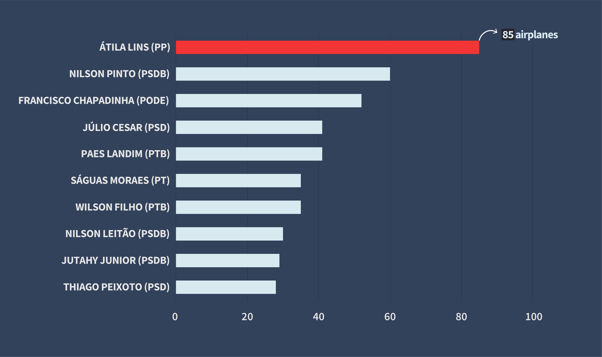
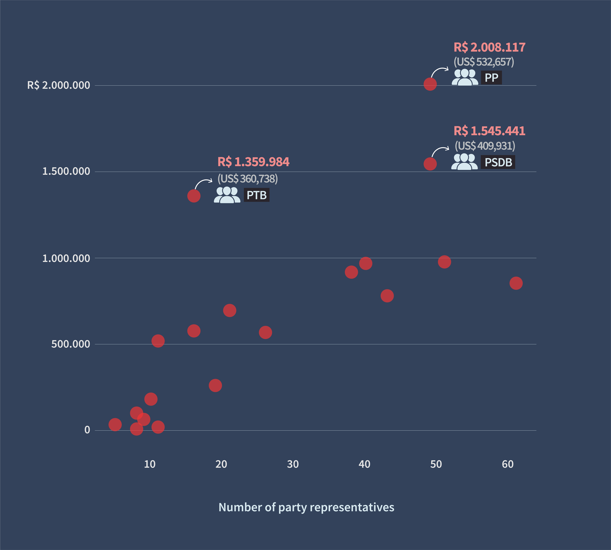

POLITICS
BY Júlia Ledur
Published July 20, 2018
Since 2013, representatives of the Brazilian Congress have spent more than 16 million reais on airplane rentals, which is equivalent to approximately 4 million dollars. The two most expensive transactions were made in 2015 by Sabino Castelo Branco, from the Brazilian Labour Party (PTB). One of them costed 184 thousand reais (48 thousand dollars), four times his total monthly budget.
Only in 2014, politicians rented 571 airplanes, the highest count of all years. The unusual number was due to campaining, since House of Representatives elections were held at the end of 2014. After that, the numbers stabilized in around 300 airplanes per year. So far, in 2018, 138 airplanes were rented. The data, acquired on the Congress open data portal, is available from November of 2013 on.
Every airplane
rented by congress members
More than 17 hundred airplanes were rented since 2013. The highest number of transactions was in 2014.
SOURCE: brasil.io / Portal da Câmara dos Deputados
Since then, 191 representatives rented 1,776 airplanes. This represents an average of 9 airplanes per politician. But some of them flew a lot more than 9 times. The champion is Átila Lins, whose name appears in 85 plane transactions throughout the course of six years. He has been a member of Congress since 1991. Átila’s most expensive airplane rental costed 32 thousand reais (8 thousand dollars).
Who rented
the most airplanes
Átila Lins is by far the politician who rented the most aircrafts. In total, he spent 1.2 million reais.

SOURCE: brasil.io / Portal da Câmara dos Deputados
The third on the rank, Francisco Chapadinha, from the Order, Democracy and Ethics Party (PODE), spent 163 thousand reais only last year. One of his flights, from Santarém to Monte Alegre, a 100-kilometer trip, costed 6 thousand reais.
Also last year, congressman Giacobo flew from Foz do Iguaçu to Cascavel and then Brasília in a private airplane that was priced at 39 thousand reais. The same route on a airliner would have costed around one thousand reais.
Considering the current term of office (from February of 2015 to January of 2019), the Progressive Party (PP) has spent the most (2 million reais), followed by Brazilian Social Democracy Party (PSDB) and Brazilian Labour Party (PTB), Átila Lins’ party.
How much
each party spent
The largest party in number of representatives, PP spent the most money, followed by PSDB and PTB.
SOURCE: brasil.io / Portal da Câmara dos Deputados
Legislation
Every House representative is entitled to a monthly budget, that varies according to the state where they were elected. The quota can range from 30 to 45 thousand reais, depending on the number of representatives per state.
According to the Brazilian legislation, representatives are allowed to rent airplanes with government money. However, the law does not specify the exact amount that can be spent on aircraft transportation. After the rental, representatives have the money reimbursed as long as they present a receipt along with a description of the flight date, origin and destination.